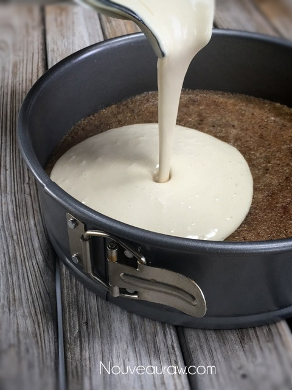
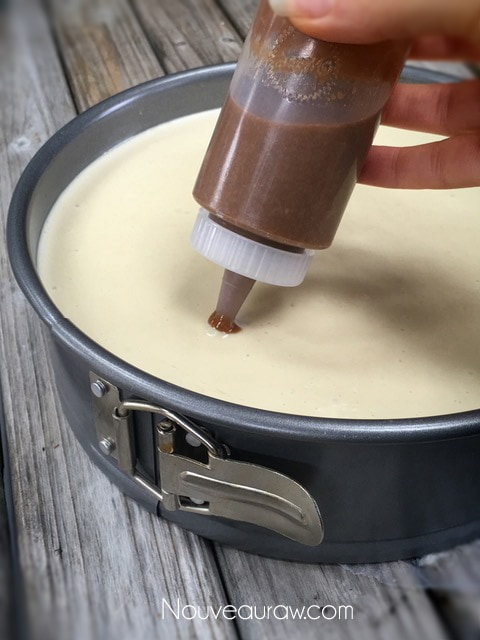
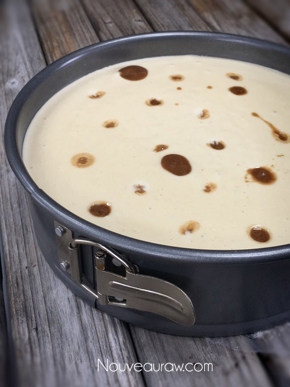
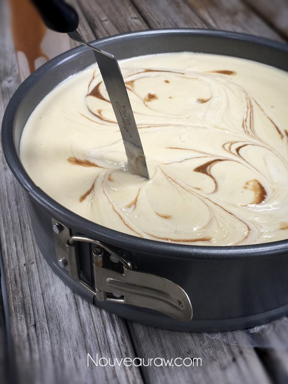
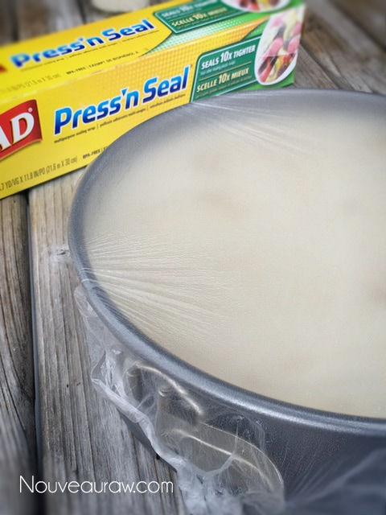

Maple Cinnamon Swirl Cultured Cheesecake

~ raw, vegan, gluten-free, cultured ~
I do my best to use healthy ingredients in all the foods I make. Today, my new discovery is in using cultured nut cheese in the cheesecake filling. Makes total sense, how come I never thought of that before?
If you wish to skip the process of making the cultured cheese, you can simply omit it. I will say that it does give the cake that “cheesy tang” that is achieved when using dairy in cheesecakes. It wasn’t just the flavor that I was going after when I had this revelation in adding it to the recipe. Keeping the gut healthy is a high priority for me.
Probiotics
Broken down, the word probiotic means “for life” or “promoting life.” Probiotics hold the key not just for better health and a stronger immune system, but also for healing digestive issues. There are many incredible benefits to probiotics, but I won’t get into all that now. I just wanted to plant a ” healthy seed” within you. :)
Why I add sunflower lecithin.
Sunflower lecithin is made up of essential fatty acids and B vitamins. It helps to support the healthy function of the brain, nervous system, and cell membranes. It also lubricates joints; helps break up cholesterol in the body. Setting aside all the nutritional benefits, it is a natural emulsifier that binds the fats from nuts with water creating a creamy consistency.
In the end, my husband had three servings of this cake in 2 days. He has declared this as his all-time favorite, and that it reminds him of the cheesecakes his mother use to make. I take that as a deep compliment and an incredible achievement. :) One thing that I want to point out is that the cinnamon sauce that gets swirled into the cake doesn’t freeze or set up solid. When you serve up a slice on a plate, the sauce will puddle around the slice which is DEVINE!! I hope you enjoy this recipe and please keep me posted if you make it. Blessings, amie sue
Yields 9″ pan
Crust:
Culturing:
Filling:
Cinnamon Swirl Sauce:
Topping:
- 1 cup raw crushed walnuts
Preparation:
Crust:
- Process the walnuts and salt in a food processor, fitted with the “S” blade, until it becomes a fine meal (small pieces).
- Add the sweetener and vanilla until it is well mixed and sticks together when pinched.
- Be careful that you don’t over-process the nuts, or they will release too much oil.
- Line the pan base with plastic wrap and press the crust mix into the Springform pan.
- To get an even crust, sprinkle the batter all around the bottom of the pan. Then press down gently.
- To create a smooth and clean crust, I use the base of a straight edge measuring cup to press it all down evenly. Clean any crumbs off of the sides of the pan.
Culturing step:
- Drain the soaked cashews and discard the soak water.
- In a high-speed blender, place the ingredients in the carafe in the following order; coconut milk then cashews.
- Due to the volume and the creamy texture that we are going after, it is important to use a high-powered blender. It could be too taxing on a lower-end model.
- Blend until the filling is creamy smooth. You shouldn’t detect any grit. If you do, keep blending.
- This process can take 2-4 minutes, depending on the strength of the blender. Keep your hand cupped around the base of the blender carafe to feel for warmth. If the batter is getting too warm. Stop the machine and let it cool. Then proceed once cooled.
- Add the probiotic and prebiotic powders. Blend just long enough to mix the powders in well.
- These are added last just in case the cashew batter gets too warm, which could possibly damage the probiotics.
- Pour into a glass bowl, cover, and allow to culture/ferment.
- The bowl can be left on the counter for 24 -/+ hours. This process could happen in less time or may take longer than 24 hours. It all depends on how cool or warm your house is.
- To speed up the process or a good one to use if your house runs cool… is to place the bowl in the cavity of your dehydrator. Turn the machine on the lowest setting, around 80 degrees. Check the culture flavor after 4-6 hours and see if it needs to go longer.
- Once done, proceed with adding the remaining ingredients.
Complete the filling batter:
- In a high-powered blender combine the; cultured cashews, sweetener, cheese (if using) lemon juice, vanilla, and salt.
- Due to the volume and the creamy texture that we are going after, it is important to use a high-powered blender. It could be too taxing on a lower-end model.
- Blend until the filling is creamy smooth. You shouldn’t detect any grit. If you do, keep blending.
- This process can take 2-4 minutes, depending on the strength of the blender. Keep your hand cupped around the base of the blender carafe to feel for warmth. If the batter is getting too warm. Stop the machine and let it cool. Then proceed once cooled.
- With a vortex going in the blender, drizzle in the coconut oil, and then add the lecithin. Blend just long enough to incorporate everything together. Don’t over-process.
- What is a vortex? Look into the container from the top and slowly increase the speed from low to high, the batter will form a small vortex (or hole) in the center. High-powered machines have containers that are designed to create a controlled vortex, systematically folding ingredients back to the blades for smoother blends and faster processing… instead of just spinning ingredients around, hoping they find their way to the blades.
- If your machine isn’t powerful enough or built to do this, you may need to stop the unit often to scrape the sides down.
- Pour the batter into the pan.
- Gently tap the pan on the counter to remove any air bubbles. They will come to the surface
- Cinnamon Swirl Sauce:
- Blend all ingredients together until smooth and transfer into a squeeze bottle that has a long tip with a small hole.
- Take the squeeze bottle of the cinnamon mixture and poke the tip of the bottle down into the batter, give the bottle a gentle squeeze, only letting up on the pressure after you withdraw the bottle tip from the filling. If you release the pressure while the tip is in the filling, it will suck the filling into the sauce. Do this in a random pattern all over the cake.
- Using a long skewer or knife, run the stick through the areas where you squeezed in the sauce. Be careful that you don’t disturb the crust down below.
- Top with crushed walnuts.
- Chill in the freezer for 4-6 hours (or overnight) and then move to the fridge for 12 hours.
- Store the cheesecake in the fridge for 3-5 days or up to 3 months in the freezer. Be sure that they are well sealed to avoid fridge odors.
The Institute of Culinary Ingredients:
- To learn more about maple syrup by clicking (here).
- Why do I specify Ceylon cinnamon? Click (here) to learn why.
- What is Himalayan pink salt and does it really matter? Click (here) to read more about it.
- Is coconut butter the same as coconut oil? Click (here) to find out.




It’s very important to protect your cheesecake when storing it in the
freezer. I find that Press’n Seal works great for the job.

© AmieSue.com